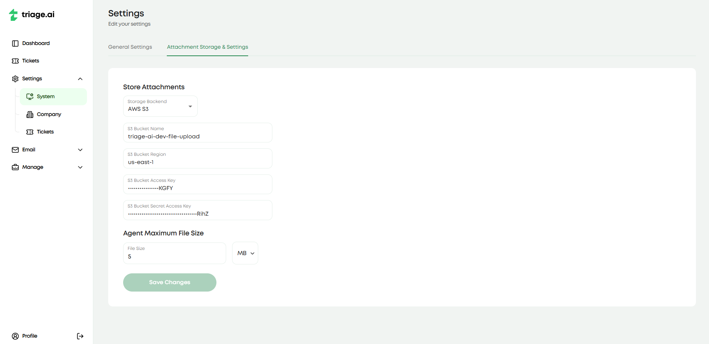
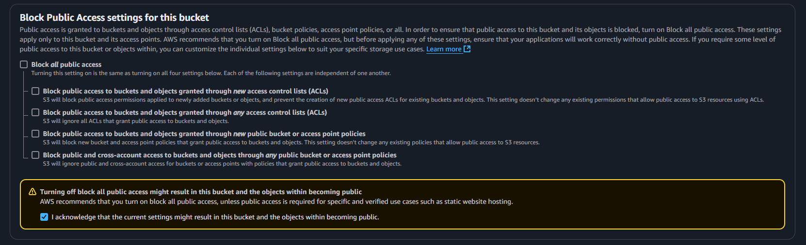
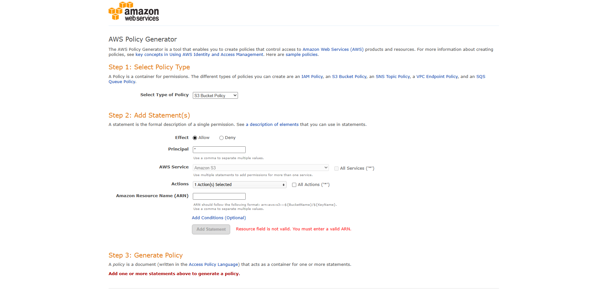
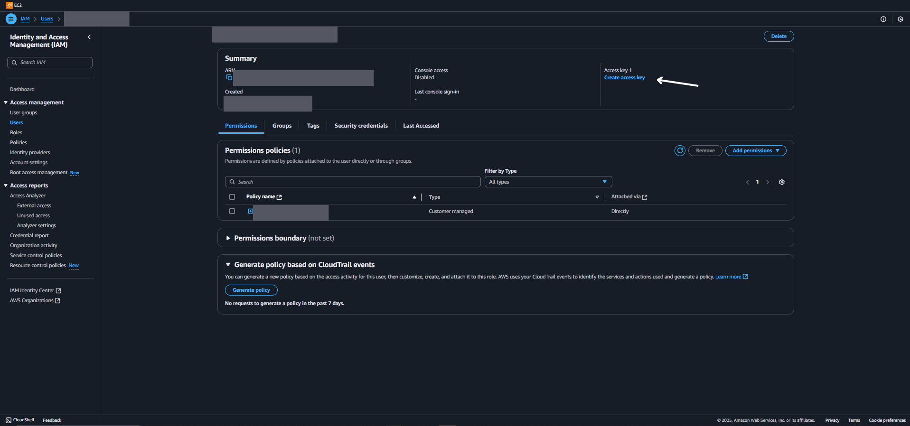

Attachments with S3
The S3 plugin allows you to store attachments in Amazon S3 instead of taking up large amounts of space in the database. This will be used to save the attachments included within ticket threads. Again, this feature is only available to admins in the settings tab under system settings.
Creating the S3 Bucket
If you don’t already, you must create an AWS account to access the console for the following steps. Once you have an account, you will head to the S3 services tab, which you can find under ‘All Services’ or by searching ‘S3’ in the search bar. Once you are in the S3 console, creating a bucket will be next. Pick a name that signifies this is being used for triage.ai. Record both the bucket name you picked and the AWS region listed (it will take on a form like ‘us-east-1’), as you will need to provide them in the settings tab when setting up the plugin. Leave all the default settings selected, except in the ‘Block Public Access settings for this bucket’ section; you must uncheck the ‘Block all public access’ box and acknowledge the warning. This is required for the plugin to work correctly.
Once the bucket is created, you will need to access it to configure additional permissions. Click on the bucket name and then the ‘Permissions’ tab. Click ‘Edit’ in the ‘Bucket Policy’ section and then ‘Policy Generator’ on the following page. On this page, you will select ‘S3 Bucket Policy’ for the ‘Select Type of Policy’, add an ‘*’ in the ‘Principal’ field, and select ‘GetObject’ in the ‘Actions’ field, similar to the image below. In the blank space, you will enter in ‘arn:aws:s3:::{YOUR_BUCKET_NAME_HERE}/*’.
Click ‘Add Statement’ and then ‘Generate Policy.’ Copy the policy generated and paste it into the ‘Bucket Policy’ section in the ‘Edit Bucket Policy’ section. Click ‘Save Changes’ and head to the Cross-origin resource sharing (CORS) section. Click edit and paste the following code into the editor:
[
{
"AllowedHeaders": [
"*"
],
"AllowedMethods": [
"PUT",
"HEAD",
"GET",
"DELETE"
],
"AllowedOrigins": [
"*"
],
"ExposeHeaders": []
}
]
Creating an IAM User and Policy
To ensure this application is the only ‘user’ making updates to the bucket, you will need to create an IAM user and provide it with the proper policies.
Head to the IAM services tab and click policies on the left sidebar. Click on ‘Create policy’ and then from the Services dropdown, select S3. Then for possible actions, select the Write dropdown and pick ‘PutObject’ and ‘DeleteObject’. Then, under Resources, you will select ‘Add ARNSs’, enter the exact name of your bucket from earlier, and click on the ‘Any’ checkbox for object name. Click ‘Add ARNs’ and then ‘Next,’ where you can now name the policy (ideally the same as the bucket) and describe what this policy is for.
Once you create the policy, you will need to create a user for the application. Select users on the left sidebar and then ‘Create user’. Again, provide a name for the user, ideally the bucket name, so it is easier to manage all these resources. On the following page, you will select ‘Attach policies directly’ and then search by name for the policy you created. Leave the remaining settings as is and hit ‘Create user.’ You should be directed back to the list of Users, where you will select the one just created. In the summary section, click on ‘Create access key’ under Access Key 1.
From here, you will select ‘Third-party service’ and acknowledge the recommendation. Provide a helpful description of what this access key is for, then click ‘Create access key’. From here, record the Access Key and Secret Access Key as this will be the only time you can see the secret access key. If you lose or incorrectly record it, you must deactivate this one and create a new one. It is also not a bad idea to regularly rotate these keys for security purposes.
If everything was done correctly, you should now be able to head to the System Settings tab available to admins and enter the bucket name, bucket region, access key, and secret access key. Once you save these settings, the plugin should be enabled, and all attachments will be stored in the S3 bucket. When you upload an attachment and the resulting attachment alerts you that there was an error with uploading, you should make sure everything is configured properly, as this error might mean your access keys are wrong or your policies weren’t set up correctly.
The video below is a helpful guide to setting up the S3 bucket and IAM user for the plugin. Some of the steps may be slightly different than you will be, but they are good visual guides to follow. The video is not affiliated with triage.ai and is meant to be a helpful guide. The start timestamp is 4:23, and the end timestamp is 10:40.